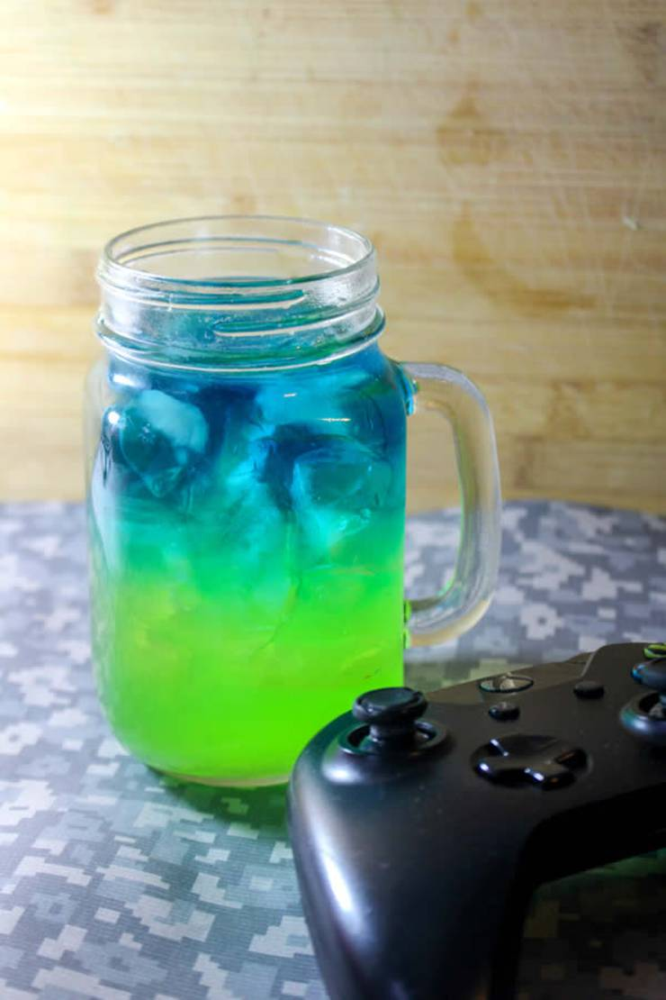

Slurp juice

Fresh slurp juice
Need a refreshing drink? Try this 3 ingredient Fortnite slurp juice!
Slurp juice is known for its health benefits
Required ingredients:
- Green Hawaiian Punch
- Blue gatorade
- Blue food coloring
- Ice
- A jar for the drink
Instructions:
- In the bottle of Gatorade, pour a few drops of blue food coloring and shake to mix. This will help the blue turn the perfect Slurp Juice shade!
- Fill a glass with ice.
- Pour in ¾ of the glass green Hawaiian Punch.
- Slowly pour the blue Gatorade on top. (I turn a spoon upside down and slowly pour it over the spoon to slow down the pour even more.)
- The blue should float on top of the green!
- Serve In This Jar and Enjoy!